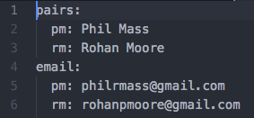

Welcome to Epicodus!
Intro
Hi, and welcome to Epicodus! Below are many of the links you will need
during your time here, as well as a few tips and reminders to help make
the most of your time here. We hope you find these resources helpful in
your journey to programming mastery.
Useful Links:
Important Tips and Reminders:
- Always check in with your partner before 8:15.
- If you do not have a partner by check in, check in yourself and check in again as a pair later.
- Don't forget to check out at the end of the day. If you're done, you may check out at 4:45.
- Friday assignments are solo. Remember that those are the only assignments you may not consult with your peers on.
- The first five weeks are free, tuition is due at the end of the first unit.
- If you're paying by loan, don't forget to get those sorted by the end of the first month.
- Most days end with a peer code review, so if you have time polish your code or make something cool.
Monday - Thursday Schedule
- 8:00 -- Arrive at Epicodus and find a partner for the days
- 8:30 -- Standup with your cohort
- 8:40 -- Code with your pair
- 12:00 -- Lunch
- 1:00 -- Code with your pair
- 4:15 -- Final commits and peer code review
- 5:00 -- Sign out for the day
Creating a Pairs File
- In the terminal, create a pairs file with touch .pairs
- Open the file with atom .pairs
- Input names, initials, and emails of both partners in the file using the format shown below
- Save and exit the pairs file

Steps to Create a New Project
- In the terminal, type cd ~/Desktop to return to the Desktop
- Make a directory for your new project, using mkdir [projectname]
- Enter the directory with cd [projectname]. You can autocomplete file names by pressing TAB
- Initialize git with git init
- Enter your pair information with git pair [Partner 1 initials] [Partner 2 initials]
- Create your project with touch [filename]
- Open your project with atom [filename]
- Add content
- As needed, commit your work with git add [filename] followed by git-pair-commit -m "[details of changes]"
- When the project is completed, open your github and create a new repository for the project
- For each partner, copy the repository link and run terminal command git remote add [Partner initials] [Github link]
- For each partner, upload your files with git push [Partner initials] master